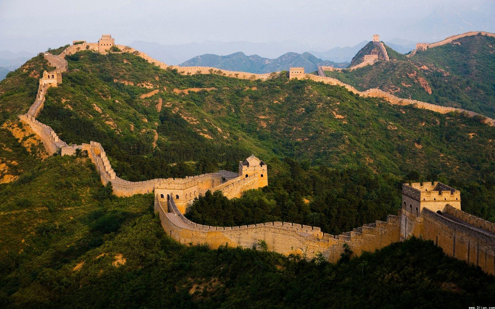
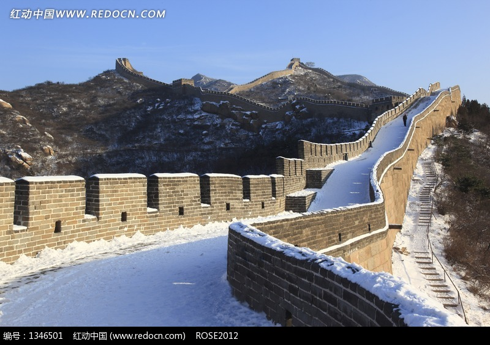
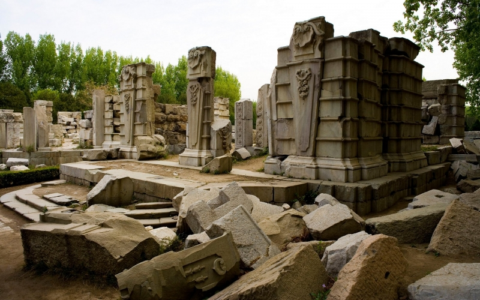
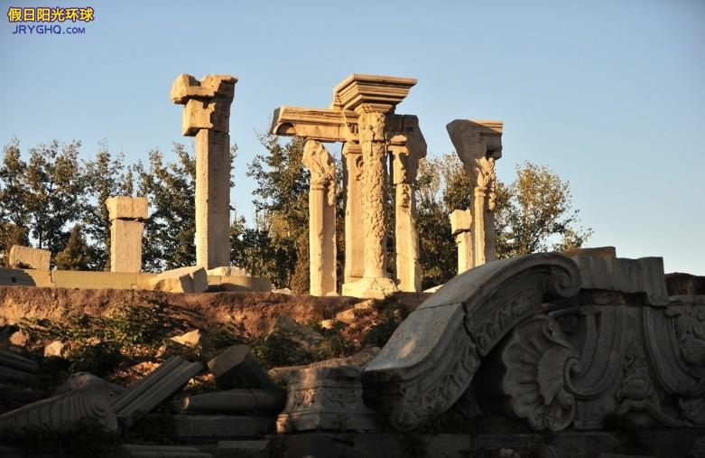
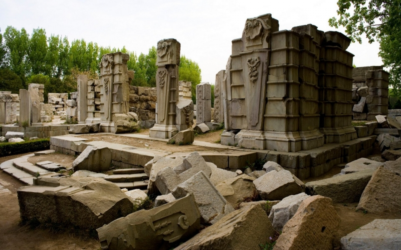
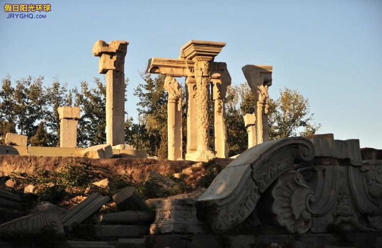

- Place to go!
- Forbidden City
- Great Wall
- The Old Summer Palace
Forbidden City, was the Chinese imperial palace from the Ming dynasty to the end of the Qing dynasty—the years 1420 to 1912. It is located in the centre of Beijing, China, and now houses the Palace Museum. It served as the home of emperors and their households as well as the ceremonial and political centre of Chinese government for almost 500 years.


The Great Wall of China is a series of fortifications made of stone, brick, tamped earth, wood, and other materials, generally built along an east-to-west line across the historical northern borders of China to protect the Chinese states and empires against the raids and invasions of the various nomadic groups of the Eurasian Steppe. Several walls were being built as early as the 7th century BC; these, later joined together and made bigger and stronger, are now collectively referred to as the Great Wall. Especially famous is the wall built 220–206 BC by Qin Shi Huang, the first Emperor of China. Little of that wall remains. Since then, the Great Wall has on and off been rebuilt, maintained, and enhanced; the majority of the existing wall is from the Ming Dynasty.
 the Old Summer Palace, known in Chinese as Yuanmingyuan, and originally called the Imperial Gardens, was a complex of palaces and gardens in Beijing. It is located 8 kilometres northwest of the walls of the Imperial City and was built in the 18th and early 19th century as the place where the emperors of the Qing dynasty resided and handled government affairs. The Old Summer Palace was known for its extensive collection of garden and building architectures and other works of art. Nearby and to the south was an extensive imperial hunting park known as "Nanyuan".
 


